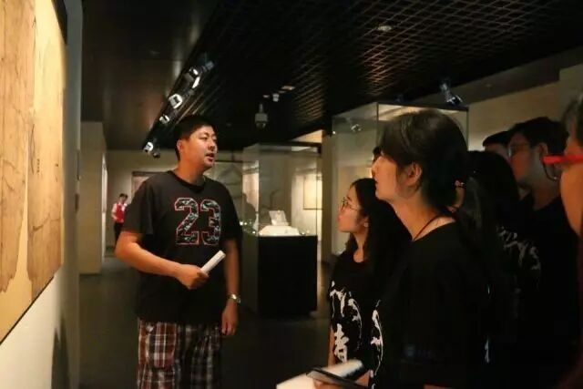
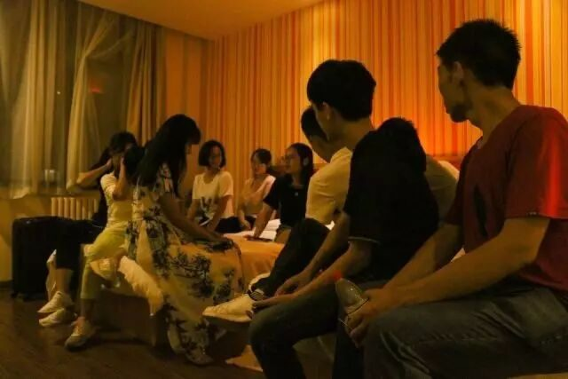
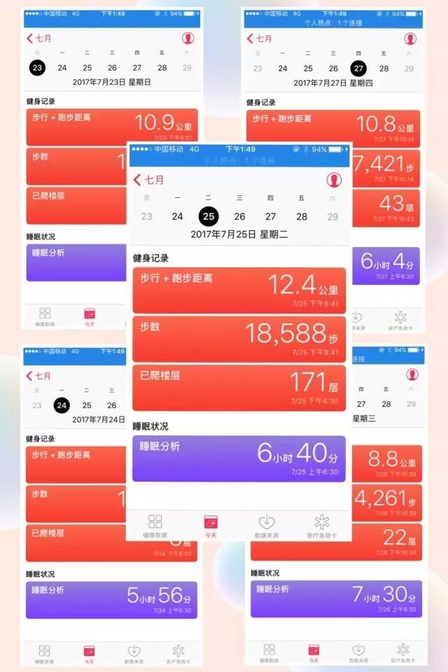

【行者明信片·玖·行者无疆——不止于足，不限于界】

行者无疆
——不止于足，不限于界


初识
起初，加入行者无疆，不过是看中了它贴心的科普，完善的后备工作以及一定的名气。而我更希望在日渐功利的今天能够参加真文化调研，而非挂着调研的玩耍。加入行者无疆后，才明白这是一场文化的苦旅，也果然没有令我失望。

启航

没有人会期待一场漫无目的的流浪，而在行者无疆，我们是一个团队，又真真切切不仅仅是一个团队，我们带着的不仅仅是自己的一腔热血，还有那对文化文物背后历史的向往。
行者无疆
河
南
行
那次苦旅
那些体悟
第一站
安阳行
甲骨文虽然历经数千年，饱受风霜，可它不却是我们想象中的寥寥几笔。

对我而言，安阳文字博物馆是收获最多的地方。我们有幸邀请到了文字博物馆的领导，他带领我们随着场馆的分布，渐渐步入历史的长河。甲骨文虽然历经数千年，饱受风霜，可它却不是我们想象中的寥寥几笔。身为目前最古老的成熟文字，它生动形象，从对人们生活事迹的描述到人类感情的表达。那些停留在甲骨上的，不仅仅是当时占卜的记载，更是古国存在的证明。或许你会觉得这都是啥玩意呀，看也看不懂，不知道他表达了什么，在领导的引领下，仔细看看，那不就是一个个栩栩如生的画面展现在面前，向我们讲述着当时的情景吗！

第二站 登封行
少林寺&三皇寨
去少林寺那天应该是最为磨练我的一天。虽然有缆车，但是大家觉得既然加入了这个团队我们就应该齐心协力，一起步行至三皇寨。有队友体力不支，就会有另一个人伸出的援手，一路上鼓励声不停，再陡的山路我们也不怕。虽然那几天我体力欠佳，但在大家的鼓励和帮助下，我们最终都成功到达顶峰。这不是一个简简单单的登山，在我看来，它对我的意义更是团队意识以及在文化调研中不可缺少的团结、毅力、磨练的体现。
请输入标题 abcdefg
第三站 洛阳行

龙门石窟
龙门石窟是我感受最深的地方。龙门石窟，可谓“十窟九空”。先不提那门票上最著名的大佛，一入门，放眼望去的是数不尽的小佛洞，它们或被挖去头面，或被截取肢体，甚至整尊都被挖走。但凡是精美的部分都难逃盗窃人之手。虽然现在这里已经被保护起来，可是之前的伤痕却不能就此抚平。尽然不是所有人都信佛，也不全是因佛而去，但这龙门石窟真真确确是历史长河中不可或缺的一部分，那些佛像静静屹立在那里，无言却又透露着历史遗迹，是历史的见证，也是遗留于后人的瑰宝。
请输入标题 abcdefg
行者，不离不弃！

在行者无疆的团队里，我们各有分工，也互相帮助。旅途虽苦，但我们有彼此，有收获，足矣。感谢能够在行者无疆这个大家庭里，认识活泼可爱斗志昂扬的大可爱小可爱们~人生苦短，幸好我没有错过行者无疆，没有错过我们12个（13？此处隐藏一位）聪（zhi）明（zhang）可爱的相遇！行者无疆，我们一直都在！
最后的最后，晒一张行走在路上的行者~


文字 | 张玉蒂
责编 | 王梓腾 李玥
审核 | 章静 彭博

河南行
且将新火试新茶
诗酒趁年华
行者无疆
♦
贰
公众号：行者无疆实践团
微博号：行丶者丶无丶疆
邮箱：2758025831@qq.com